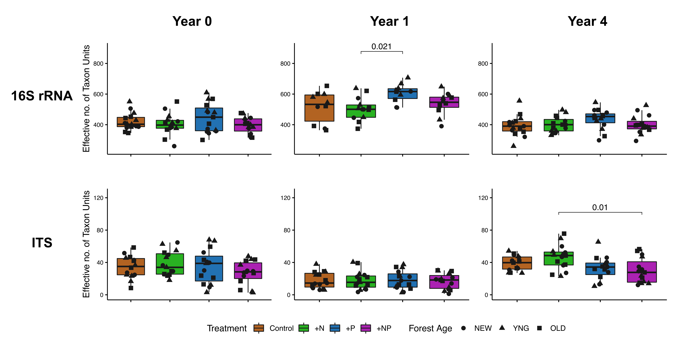

Click here for setup information.
knitr::opts_chunk$set(echo = TRUE, eval = FALSE)
set.seed(119)
library(phyloseq); packageVersion("phyloseq")
library(Biostrings); packageVersion("Biostrings")
pacman::p_load(tidyverse, microeco, file2meco, magrittr,
microbiome, phytools, phangorn, reactable, Matrix,
pairwiseAdonis, codefolder, naniar, downloadthis,
labdsv, patchwork, agricolae, captioner,
install = FALSE, update = FALSE)
#pacman::p_depends(agricolae, local = TRUE)
#pacman::p_depends_reverse(agricolae, local = TRUE)
options(scipen=999)
knitr::opts_current$get(c(
"cache",
"cache.path",
"cache.rebuild",
"dependson",
"autodep"
))### COmmon formatting scripts
### NOTE: captioner.R must be read BEFORE captions_XYZ.R
source("assets/captioner/captioner.R")
source("assets/captioner/captions/captions_paper.R")
source("assets/reactable/download_this_fun.R")
source("assets/reactable/styles.R")
source("assets/reactable/table_functions/beta.R")Beta Diversity

(16S rRNA/ITS) Table 1 | PCoA ordination plots of PIME filtered data for all samples.
Alpha Diversity

(16S rRNA/ITS) Table 2 | Shannon diversity estimates PERFect filtered data.
Differentially abundant taxa (16S rRNA)

(16S rRNA) Figure 1 | Differentially abundant taxa from the 16S rRNA data set. Significant differences denoted by asterisks (* p < 0.05, ** p < 0.01, *** p < 0.001, **** p < 0.0001).
Differentially abundant taxa (ITS)

(ITS) Figure 1 | Differentially abundant taxa from the ITS data set. Significant differences denoted by asterisks (* p < 0.05, ** p < 0.01, *** p < 0.001, **** p < 0.0001).
Scratch code.
Beta diversity
In order to test for significance between sample groups, we must perform the following steps:
- Transform sample counts to relative abundance.
- Create distance matrices based on some metrics, for example
wunifrac,unifrac, andjsd. For this we use the functionphyloseq::distance. - Next, calculate beta dispersion using the
betadisperfunction from theveganpackage (Oksanen et al. 2012). - Then, use the function
permutestto run a Permutation test for homogeneity of multivariate dispersions. - If the beta dispersion tests are not significant we will run a PERMANOVA using
adonis(since PERMANOVA assumes equal dispersion), otherwise we will use Analysis of Similarity (ANOSIM), both available in theveganpackage (Oksanen et al. 2012).
Steps 2–4 are combined in a for loop that tests all three distance metrics.
First, transform sample counts to relative abundance and generate some new trees.
Show code
ssu_samp_ps <- c(objects(pattern = "ssu_ps_"))
for (i in ssu_samp_ps) {
tmp_name <- purrr::map_chr(i, ~ paste0(., "_prop"))
tmp_get <- get(i)
tmp_ps <- transform_sample_counts(tmp_get, function(otu)
1e5 * otu/sum(otu))
tmp_ps@phy_tree <- NULL
tmp_ps <- prune_samples(sample_sums(tmp_ps) > 0, tmp_ps)
tmp_tree <- rtree(ntaxa(tmp_ps), rooted = TRUE,
tip.label = taxa_names(tmp_ps))
tmp_ps <- merge_phyloseq(tmp_ps, sample_data, tmp_tree)
print(tmp_name)
assign(tmp_name, tmp_ps)
rm(list = ls(pattern = "tmp_"))
}
objects()choose_group <- "YR_TREAT"Beta Dispersion
Here we create distance matrices for each metric, calculate the beta dispersion, and run a permutation test for homogeneity of multivariate dispersions.
Show code
ssu_dist <- c("jsd", "unifrac", "wunifrac", "jaccard")
for (i in ssu_samp_ps) {
for (d in ssu_dist){
tmp_get <- get(purrr::map_chr(i, ~ paste0(i, "_prop")))
tmp_samp <- data.frame(sample_data(tmp_get))
if(d == "jaccard"){
tmp_df <- phyloseq::distance(tmp_get, method = d, binary = TRUE)
} else {
tmp_df <- phyloseq::distance(tmp_get, method = d)
}
#tmp_df <- phyloseq::distance(tmp_get, method = d)
tmp_df_name <- purrr::map_chr(d, ~ paste0(i, "_beta_dist_", .))
assign(tmp_df_name, tmp_df)
tmp_df2 <- betadisper(tmp_df, tmp_samp[[choose_group]], bias.adjust = TRUE)
tmp_df_name2 <- purrr::map_chr(d, ~ paste0(i, "_beta_dispersion_", .))
assign(tmp_df_name2, tmp_df2)
tmp_df3 <- permutest(tmp_df2, pairwise = TRUE,
permutations = 1000, binary = FALSE)
tmp_df_name3 <- purrr::map_chr(d, ~ paste0(i, "_permutest_", .))
assign(tmp_df_name3, tmp_df3)
rm(list = ls(pattern = "tmp_"))
}
}FULL
Arbitrary filtered
PERFect filtered
PIME filtered
Remember, if the beta dispersion p-value is greater than 0.05 we use PERMANOVA, otherwise we use ANOSIM.
Show code
ssu_perm_pvalues <- data.frame()
for (i in ssu_samp_ps) {
for (d in ssu_dist){
tmp_get <- get(purrr::map_chr(i, ~ paste0(., "_permutest_", d)))
tmp_pv <- tmp_get$tab$`Pr(>F)`[1]
tmp_test <- if(tmp_pv < 0.05){
tmp_test <- "ANOSIM"
} else {
tmp_test <- "ADONIS"
}
tmp_df <- data.frame(i, d, tmp_pv, tmp_test)
ssu_perm_pvalues <- dplyr::bind_rows(ssu_perm_pvalues, tmp_df)
rm(list = ls(pattern = "tmp_"))
}
}
ssu_perm_pvalues <- ssu_perm_pvalues %>%
dplyr::rename(c("data_set" = 1, "dist" = 2, "pval" = 3, "test" = 4))
ssu_perm_pvalues <- ssu_perm_pvalues %>% tibble::remove_rownames()(16S rRNA) Table 1 | Summary of Beta Dispersion Tests for unfiltered & filtered data sets against various distance metrics. The test column shows the method chosen (based on the test results) to assess differences in beta diversity. If p-values are significant (red, p-value < 0.05) we used ANOSIM, otherwise we used PERMANOVA (blue, p-value > 0.05).
Significance Tests
Depending on the test, we need different data structures. For adonis we need the sample metadata and for anosim we start with a phyloseq object.
We begin by creating separate sample metadata data frames for each phyloseq object (for any adonis analyses).
Show code
for (i in ssu_samp_ps) {
tmp_get <- get(purrr::map_chr(i, ~ paste0(., "_prop")))
tmp_samp <- data.frame(sample_data(tmp_get))
tmp_name <- purrr::map_chr(i, ~ paste0(., "_sampledf"))
assign(tmp_name, tmp_samp)
rm(list = ls(pattern = "tmp_"))
}
objects(pattern="_sampledf")Next we can use a for loop with an if/else to perform significance tests. This loop does the following for every combination of phyloseq object and distance metric:
- Get the results of each permutation test.
- Get the p-value from the test.
- If the p-value is < 0.05,
anosimis run, otherwise we useadonis.
Show code
for (i in ssu_samp_ps) {
for (d in ssu_dist){
tmp_get <- get(purrr::map_chr(i, ~ paste0(., "_permutest_", d)))
tmp_pv <- tmp_get$tab$`Pr(>F)`[1]
if(tmp_pv < 0.05){
tmp_anosim_data <- get(i)
tmp_groups <- get_variable(tmp_anosim_data, choose_group)
tmp_prop <- get(purrr::map_chr(i, ~ paste0(., "_prop")))
tmp_anosim_d <- anosim(phyloseq::distance(tmp_prop, d), grouping = tmp_groups)
tmp_anosim_name <- purrr::map_chr(i, ~ paste0(., "_sig_anosim_", d))
assign(tmp_anosim_name, tmp_anosim_d)
} else {
tmp_adonis_data <- get(purrr::map_chr(i, ~ paste0(., "_beta_dist_", d)))
tmp_adonis_sampledf <- get(purrr::map_chr(i, ~ paste0(., "_sampledf")))
tmp_adonis <- adonis(tmp_adonis_data ~ YR_TREAT,
data = tmp_adonis_sampledf, permutations = 1000)
tmp_adonis2 <- adonis2(tmp_adonis_data ~ YR_TREAT,
data = tmp_adonis_sampledf, permutations = 1000)
tmp_adonis_name <- purrr::map_chr(i, ~ paste0(., "_sig_adonis_", d))
tmp_adonis2_name <- purrr::map_chr(i, ~ paste0(., "_sig_adonis2_", d))
assign(tmp_adonis_name, tmp_adonis)
assign(tmp_adonis2_name, tmp_adonis2)
}
rm(list = ls(pattern = "tmp_"))
}
}::: l-body ::: {.panelset} ::: {.panel}
FULL data set
:::
Arbitrary filtered
PERFect filtered
PIME filtered
:::
Summaries
Here is a quick summary of significance tests for the data sets against three distance matrices.
(16S rRNA) Table 2 | Summary of significant tests by Year for FULL, unfiltered data set. P-values in red indicate significant differences (p-value < 0.05).
Ordinations
Now we can visualize the results of several distance matrices to access dissimilarity among sample. Here we ordinate using Principal Coordinate Analysis (PCoA) but we could also test other methods like NMDS, CCA, etc.
Plot Code
Here I made a custom “function” to run the analysis, plot the graphs, save graph objects, and save plots (as .png and .pdf files). I am sure an actual programmer would be shocked, but it works. This is used for both the 16S rRNA and ITS data sets.
Show code
agua_col <- c("#B26322", "#29B222", "#2271B2", "#AB22B2")
#agua_col2 <- c("#2271B2", "#3DB7E9", "#F748A5", "#359B73", "#D55E00", "#E69F00")
agua_col2 <- c("#191919", "#191919", "#191919", "#191919", "#191919", "#191919", "#191919", "#191919", "#191919", "#191919", "#191919")
#source("hack_code/trans_beta_jjs.R")
treat_order <- c("CTL", "N", "P", "NP")
age_order <- c("NEW", "YNG", "OLD")
year_order <- c("Y0", "Y1", "Y4")
microeco_beta_plot <- function(choose_input, choose_metric, choose_ord) {
tmp_dataset <- get(purrr::map_chr(choose_input, ~paste0(., "_me")))
###### ORDER factors
tmp_dataset$sample_table$TREAT %<>% factor(., levels = treat_order)
tmp_dataset$sample_table$AGE %<>% factor(., levels = age_order)
###### GENERATE plots
tmp_t1 <- trans_beta$new(dataset = tmp_dataset, group = "YEAR", measure = choose_metric)
tmp_t1$cal_ordination(ordination = choose_ord)
tmp_t1_ord_plot <- tmp_t1$plot_ordination(plot_color = "YEAR",
plot_shape = "TREAT",
plot_group_ellipse = FALSE,
color_values = agua_col,
shape_values = c(19, 17, 15, 18)
) +
geom_point(size = 4) +
theme(legend.position = "bottom")
tmp_t1$cal_group_distance()
tmp_t1_within_group_plot <- tmp_t1$plot_group_distance(plot_group_order = year_order,
distance_pair_stat = TRUE,
hide_ns = TRUE, hide_ns_more = NULL,
color_values = agua_col)
tmp_t1$res_group_distance
tmp_t1$cal_group_distance(within_group = FALSE)
tmp_t1_btwn_group_plot <- tmp_t1$plot_group_distance(distance_pair_stat = TRUE,
hide_ns = TRUE, hide_ns_more = NULL,
color_values = agua_col2)
if (choose_metric == "jsd") {
tmp_t1_within_group_plot <- tmp_t1_within_group_plot + ylab("Jensen-Shannon Index")
tmp_t1_btwn_group_plot <- tmp_t1_btwn_group_plot + ylab("Jensen-Shannon Index")
} else if (choose_metric == "manhattan") {
tmp_t1_within_group_plot <- tmp_t1_within_group_plot + ylab("Manhattan distance")
tmp_t1_btwn_group_plot <- tmp_t1_btwn_group_plot + ylab("Manhattan distance")
} else if (choose_metric == "gower") {
tmp_t1_within_group_plot <- tmp_t1_within_group_plot + ylab("Gower distance")
tmp_t1_btwn_group_plot <- tmp_t1_btwn_group_plot + ylab("Gower distance")
} else if (choose_metric == "canberra") {
tmp_t1_within_group_plot <- tmp_t1_within_group_plot + ylab("Canberra distance")
tmp_t1_btwn_group_plot <- tmp_t1_btwn_group_plot + ylab("Canberra distance")
} else {
tmp_t1_within_group_plot <- tmp_t1_within_group_plot
tmp_t1_btwn_group_plot <- tmp_t1_btwn_group_plot
}
###### SET names
tmp_name_ord <- paste(choose_input, "_me_", choose_metric, "_", choose_ord, sep = "")
tmp_name_wg <- paste(choose_input, "_me_wg_", choose_metric, "_", choose_ord, sep = "")
tmp_name_bg <- paste(choose_input, "_me_bg_", choose_metric, "_", choose_ord, sep = "")
assign(tmp_name_ord, tmp_t1_ord_plot, envir = parent.frame(n = 2))
assign(tmp_name_wg, tmp_t1_within_group_plot, envir = parent.frame(n = 2))
assign(tmp_name_bg, tmp_t1_btwn_group_plot, envir = parent.frame(n = 2))
###### SET paths
dir.create(paste(microeco_path, choose_input, "/ordination/", sep = ""), recursive = TRUE)
tmp_path <- paste(microeco_path, choose_input, "/ordination/", sep = "")
tmp_path_ord <- paste(tmp_path, "ord_plots/", sep = "")
tmp_path_wg <- paste(tmp_path, "within_group/", sep = "")
tmp_path_bg <- paste(tmp_path, "between_group/", sep = "")
###### SAVE plots
ggplot2::ggsave(tmp_t1_ord_plot, path = paste(tmp_path_ord, sep = ""),
filename = paste0(tmp_name_ord, ".png", sep = ""))
ggplot2::ggsave(tmp_t1_ord_plot, path = paste(tmp_path_ord, sep = ""),
filename = paste0(tmp_name_ord, ".pdf", sep = ""))
ggplot2::ggsave(tmp_t1_within_group_plot, path = paste(tmp_path_wg, sep = ""),
filename = paste0(tmp_name_wg, ".png", sep = ""))
ggplot2::ggsave(tmp_t1_within_group_plot, path = paste(tmp_path_wg, sep = ""),
filename = paste0(tmp_name_wg, ".pdf", sep = ""))
ggplot2::ggsave(tmp_t1_btwn_group_plot, path = paste(tmp_path_bg, sep = ""),
filename = paste0(tmp_name_bg, ".png", sep = ""))
ggplot2::ggsave(tmp_t1_btwn_group_plot, path = paste(tmp_path_bg, sep = ""),
filename = paste0(tmp_name_bg, ".pdf", sep = ""))
rm(list = ls(pattern = "tmp_"))
}And then run it like so:
microeco_beta_plot(choose_input = "ssu_ps_pime",
choose_metric = "bray",
choose_ord = "PCoA")However, since we have a lot of data sets and distance metrics to test, I wrote a little function that runs the function described above on a bunch of data sets, distance metrics, and ordination methods.
Show code
run_microeco_beta_plot <- function(dataset, ord) {
for (j in 1:length(get(paste(dataset, "_me", sep = ""))$beta_diversity)) {
tmp_metric <- names(get(paste(dataset, "_me", sep = ""))$beta_diversity[j])
tmp_choose_input <- paste(dataset, sep = "")
microeco_beta_plot(choose_input = tmp_choose_input, choose_metric = tmp_metric, choose_ord = ord)
rm(list = ls(pattern = "tmp_"))
}
} So if we wanted to plot the 16S rRNA, PERFect filtered data set, from Year 4 using PCoA, we would run the command like so.
run_microeco_beta_plot("ssu_ps_perfect", "PCoA")The two functions could likely be combined but I could not figure out how to make that work :/
16S rRNA plots
To begin, we calculate distance matrices using several methods. By default, the microeco package will calculate Bray-Curtis, Unweighted UniFrac, and Weighted UniFrac. If we want to include others (which we do) we simply add code to calculate distance using the desire metric. The code below illustrates how this is accomplished.
Show code
microeco_path <- "files/paper/microeco/"
for (i in ssu_samp_ps) {
tmp_dataset <- get(purrr::map_chr(i, ~paste0(., "_me")))
tmp_dataset$cal_betadiv(unifrac = TRUE)
#### CODE TO ADD JSD DISTANCE ####
tmp_jsd <- phyloseq::distance(get(i), method = "jsd")
tmp_jsd <- forceSymmetric(as.matrix(tmp_jsd), uplo = "L")
tmp_jsd <- as.matrix(tmp_jsd)
tmp_dataset$beta_diversity$jsd <- tmp_jsd
#### CODE TO ADD jaccard DISTANCE ####
tmp_jac <- phyloseq::distance(get(i), method = "jaccard", binary = TRUE)
tmp_jac <- forceSymmetric(as.matrix(tmp_jac), uplo = "L")
tmp_jac <- as.matrix(tmp_jac)
tmp_dataset$beta_diversity$jaccard <- tmp_jac
#### #### #### #### #### #### #### ####
dir.create(paste(microeco_path, i, "/metrics/", sep = ""), recursive = TRUE)
tmp_dataset$save_betadiv(dirpath = paste(microeco_path, i, "/metrics/", sep = ""))
rm(list = ls(pattern = "tmp_"))
}
remove(list = ls())
#load("page_build/paper_wf_part_2.rdata")
objects()microeco_path <- "files/paper/microeco/"
for (i in its_samp_ps) {
tmp_dataset <- get(purrr::map_chr(i, ~paste0(., "_me")))
tmp_dataset$cal_betadiv(unifrac = FALSE)
#### CODE TO ADD JSD DISTANCE ####
tmp_jsd <- phyloseq::distance(get(i), method = "jsd")
tmp_jsd <- forceSymmetric(as.matrix(tmp_jsd), uplo = "L")
tmp_jsd <- as.matrix(tmp_jsd)
tmp_dataset$beta_diversity$jsd <- tmp_jsd
#### CODE TO ADD jaccard DISTANCE ####
tmp_jac <- phyloseq::distance(get(i), method = "jaccard", binary = TRUE)
tmp_jac <- forceSymmetric(as.matrix(tmp_jac), uplo = "L")
tmp_jac <- as.matrix(tmp_jac)
tmp_dataset$beta_diversity$jaccard <- tmp_jac
#### CODE TO ADD GOWER DISTANCE ####
tmp_gower <- phyloseq::distance(get(i), method = "gower")
tmp_gower <- forceSymmetric(as.matrix(tmp_gower), uplo = "L")
tmp_gower <- as.matrix(tmp_gower)
tmp_dataset$beta_diversity$gower <- tmp_gower
#### CODE TO ADD canberra DISTANCE ####
tmp_canberra <- phyloseq::distance(get(i), method = "canberra")
tmp_canberra <- forceSymmetric(as.matrix(tmp_canberra), uplo = "L")
tmp_canberra <- as.matrix(tmp_canberra)
tmp_dataset$beta_diversity$canberra <- tmp_canberra
#### CODE TO ADD manhattan DISTANCE ####
tmp_manhattan <- phyloseq::distance(get(i), method = "manhattan")
tmp_manhattan <- forceSymmetric(as.matrix(tmp_manhattan), uplo = "L")
tmp_manhattan <- as.matrix(tmp_manhattan)
tmp_dataset$beta_diversity$manhattan <- tmp_manhattan
#### #### #### #### #### #### #### ####
dir.create(paste(microeco_path, i, "/metrics/", sep = ""), recursive = TRUE)
tmp_dataset$save_betadiv(dirpath = paste(microeco_path, i, "/metrics/", sep = ""))
rm(list = ls(pattern = "tmp_"))
}
objects(pattern = "its_")Now we run the custom function run_microeco_beta_plot, which incorporates the other custom function microeco_beta_plot, for each of the filtered and unfiltered data sets, split by Year. Like so…
Show code
run_microeco_beta_plot("ssu_ps_work", "PCoA")
run_microeco_beta_plot("ssu_ps_filt", "PCoA")
run_microeco_beta_plot("ssu_ps_perfect", "PCoA")
run_microeco_beta_plot("ssu_ps_pime", "PCoA")Show code
run_microeco_beta_plot("its_ps_work", "PCoA")
run_microeco_beta_plot("its_ps_filt", "PCoA")
run_microeco_beta_plot("its_ps_perfect", "PCoA")
run_microeco_beta_plot("its_ps_pime", "PCoA")Before moving on we create a function that sets set all axes (in plots to compare) to the same scales.
Show code
scale_beta_div_plots <- function(ps_object, ord) {
### GET PLOTS
sub_scale <- stringr::str_subset(scale_plots, ps_object)
sub_scale <- stringr::str_subset(sub_scale, paste("_", ord, sep = ""))
tmp_scale <- sub_scale
scale_plot_list <- lapply(tmp_scale, get)
names(scale_plot_list) <- tmp_scale
### GET min/max PCo values
PCo1min <- min(sapply(scale_plot_list, function(x) min(x$data$PCo1)))
PCo1max <- max(sapply(scale_plot_list, function(x) max(x$data$PCo1)))
PCo1 <- c(PCo1min, PCo1max)
PCo1 <- max(abs(PCo1))
PCo2min <- min(sapply(scale_plot_list, function(x) min(x$data$PCo2)))
PCo2max <- max(sapply(scale_plot_list, function(x) max(x$data$PCo2)))
PCo2 <- c(PCo2min, PCo2max)
PCo2 <- max(abs(PCo2))
cat("For the data set", ps_object," and distance method", ord, "\n")
cat("The minimum & maximum values of PCo1 have been set to ", PCo1, "\n")
cat("The minimum & maximum values of PCo2 have been set to ", PCo2, "\n")
cat("--------------------------------------------------------- ", "\n")
### Add new lims
scale_plot_list_fix <- lapply(scale_plot_list, function(x) x +
xlim(-PCo1, PCo1) +
ylim(-PCo2, PCo2))
list2env(scale_plot_list_fix, envir = parent.frame())
}The remaining code blocks in this section are used to generate combined figures. These code blocks are hidden by default but can be accessed using the repo link at the bottom of the page.
FULL data set
(16S rRNA) Figure 2 |
Arbitrary filtered
(16S rRNA) Figure 3 |
PERFect filtered
(16S rRNA) Figure 4 |
PIME filtered
(16S rRNA) Figure 5 |
ITS
In order to test for significance between sample groups, we must perform the following steps:
- Transform sample counts to relative abundance.
- Create distance matrices based on some metrics, for example
wunifrac,unifrac, andjsd. For this we use the functionphyloseq::distance. - Next, calculate beta dispersion using the
betadisperfunction from theveganpackage (Oksanen et al. 2012). - Then, use the function
permutestto run a Permutation test for homogeneity of multivariate dispersions. - If the beta dispersion tests are not significant we will run a PERMANOVA using
adonis(since PERMANOVA assumes equal dispersion), otherwise we will use Analysis of Similarity (ANOSIM), both available in theveganpackage (Oksanen et al. 2012).
Steps 2–4 are combined in a for loop that tests all three distance metrics.
Again, transform sample counts to relative abundance and generate some new trees.
Show code
its_samp_ps <- c(objects(pattern = "its_.*_Y[0-9]$"))
for (i in its_samp_ps) {
tmp_name <- purrr::map_chr(i, ~ paste0(., "_prop"))
tmp_get <- get(i)
tmp_ps <- transform_sample_counts(tmp_get, function(otu)
1e5 * otu/sum(otu))
tmp_ps@phy_tree <- NULL
tmp_ps <- prune_samples(sample_sums(tmp_ps) > 0, tmp_ps)
tmp_ps <- merge_phyloseq(tmp_ps, sample_data)
print(tmp_name)
assign(tmp_name, tmp_ps)
rm(list = ls(pattern = "tmp_"))
}Beta Dispersion
Here we create distance matrices for each metric, calculate the beta dispersion, and run a permutation test for homogeneity of multivariate dispersions.
Show code
its_dist <- c("jsd", "bray", "gower", "jaccard")
for (i in its_samp_ps) {
for (d in its_dist){
tmp_get <- get(purrr::map_chr(i, ~ paste0(i, "_prop")))
tmp_samp <- data.frame(sample_data(tmp_get))
if(d == "jaccard"){
tmp_df <- phyloseq::distance(tmp_get, method = d, binary = TRUE)
} else {
tmp_df <- phyloseq::distance(tmp_get, method = d)
}
# tmp_df <- phyloseq::distance(tmp_get, method = d)
tmp_df_name <- purrr::map_chr(d, ~ paste0(i, "_beta_dist_", .))
assign(tmp_df_name, tmp_df)
tmp_df2 <- betadisper(tmp_df, tmp_samp[[choose_group]], bias.adjust = TRUE)
tmp_df_name2 <- purrr::map_chr(d, ~ paste0(i, "_beta_dispersion_", .))
assign(tmp_df_name2, tmp_df2)
tmp_df3 <- permutest(tmp_df2, pairwise = TRUE,
permutations = 1000, binary = FALSE)
tmp_df_name3 <- purrr::map_chr(d, ~ paste0(i, "_permutest_", .))
assign(tmp_df_name3, tmp_df3)
rm(list = ls(pattern = "tmp_"))
}
}Results of Beta Dispersion & Permutation tests (FULL data set)
Year 0
Year 1
Year 4
Results of Beta Dispersion & Permutation tests (Arbitrary filtered)
Year 0
Year 1
Year 4
Results of Beta Dispersion & Permutation tests (PERFect filtered)
Year 0
Year 1
Year 4
Results of Beta Dispersion & Permutation tests (PIME filtered)
Year 0
Year 1
Year 4
Remember, if the beta dispersion p-value is greater than 0.05 we use PERMANOVA, otherwise we use ANOSIM.
Show code
its_perm_pvalues <- data.frame()
for (i in its_samp_ps) {
for (d in its_dist){
tmp_get <- get(purrr::map_chr(i, ~ paste0(., "_permutest_", d)))
tmp_pv <- tmp_get$tab$`Pr(>F)`[1]
tmp_test <- if(tmp_pv < 0.05){
tmp_test <- "ANOSIM"
} else {
tmp_test <- "ADONIS"
}
tmp_df <- data.frame(i, d, tmp_pv, tmp_test)
its_perm_pvalues <- dplyr::bind_rows(its_perm_pvalues, tmp_df)
rm(list = ls(pattern = "tmp_"))
}
}
its_perm_pvalues <- its_perm_pvalues %>%
dplyr::rename(c("data_set" = 1, "dist" = 2, "pval" = 3, "test" = 4))
its_perm_pvalues <- its_perm_pvalues %>% tibble::remove_rownames()(ITS) Table 1 | Summary of Beta Dispersion Tests for unfiltered & filtered data sets against various distance metrics. The test column shows the method chosen (based on the test results) to assess differences in beta diversity. If p-values are significant (red, p-value < 0.05) we used ANOSIM, otherwise we used PERMANOVA (blue, p-value > 0.05).
Significance Tests
Depending on the test, we need different data structures. For adonis we need the sample metadata and for anosim we start with a phyloseq object.
We begin by creating separate sample metadata data frames for each phyloseq object (for any adonis analyses).
Show code
for (i in its_samp_ps) {
tmp_get <- get(purrr::map_chr(i, ~ paste0(., "_prop")))
tmp_samp <- data.frame(sample_data(tmp_get))
tmp_name <- purrr::map_chr(i, ~ paste0(., "_sampledf"))
assign(tmp_name, tmp_samp)
rm(list = ls(pattern = "tmp_"))
}
objects(pattern="_sampledf")Next we can use a for loop with an if/else to perform significance tests. This loop does the following for every combination of phyloseq object and distance metric:
- Get the results of each permutation test.
- Get the p-value from the test.
- If the p-value is < 0.05,
anosimis run, otherwise we useadonis.
Show code
for (i in its_samp_ps) {
for (d in its_dist){
tmp_get <- get(purrr::map_chr(i, ~ paste0(., "_permutest_", d)))
tmp_pv <- tmp_get$tab$`Pr(>F)`[1]
if(tmp_pv < 0.05){
tmp_anosim_data <- get(i)
tmp_groups <- get_variable(tmp_anosim_data, choose_group)
tmp_prop <- get(purrr::map_chr(i, ~ paste0(., "_prop")))
tmp_anosim_d <- anosim(phyloseq::distance(tmp_prop, d), grouping = tmp_groups)
tmp_anosim_name <- purrr::map_chr(i, ~ paste0(., "_sig_anosim_", d))
assign(tmp_anosim_name, tmp_anosim_d)
} else {
tmp_adonis_data <- get(purrr::map_chr(i, ~ paste0(., "_beta_dist_", d)))
tmp_adonis_sampledf <- get(purrr::map_chr(i, ~ paste0(., "_sampledf")))
tmp_adonis <- adonis(tmp_adonis_data ~ YR_TREAT,
data = tmp_adonis_sampledf, permutations = 1000)
tmp_adonis2 <- adonis2(tmp_adonis_data ~ YR_TREAT,
data = tmp_adonis_sampledf, permutations = 1000)
tmp_adonis_name <- purrr::map_chr(i, ~ paste0(., "_sig_adonis_", d))
tmp_adonis2_name <- purrr::map_chr(i, ~ paste0(., "_sig_adonis2_", d))
assign(tmp_adonis_name, tmp_adonis)
assign(tmp_adonis2_name, tmp_adonis2)
}
rm(list = ls(pattern = "tmp_"))
}
}Results of Significance tests (FULL data set)
Year 0
Year 1
Year 4
Results of Significance tests (Arbitrary filtered)
Year 0
Year 1
Year 4
Results of Significance tests (PERFect filtered)
Year 0
Year 1
Year 4
Results of Significance tests (PIME filtered)
Year 0
Year 1
Year 4
Summaries
Here is a quick summary of significance tests for the data sets against three distance matrices.
FULL data sets
(ITS) Table 2 | Summary of significant tests by Year for FULL, unfiltered data set. P-values in red indicate significant differences (p-value < 0.05).
Arbitrary filtered
(ITS) Table 3 | Summary of significant tests by Year for Arbitrary filtered data set. P-values in red indicate significant differences (p-value < 0.05).
PERFect filtered
(ITS) Table 4 | Summary of significant tests by Year for PERFect filtered data set. P-values in red indicate significant differences (p-value < 0.05).
PIME filtered
(ITS) Table 5 | Summary of significant tests by Year for PIME filtered data set. P-values in red indicate significant differences (p-value < 0.05).
ITS Plots
The ITS code is nearly identical. The only differences are related to selected distance metrics.
Code to reproduce ITS plots
class(its_ps_perfect_Y0_me$beta_diversity)
summary(its_ps_perfect_Y0_me$beta_diversity)Show code
run_microeco_beta_plot("its_ps_work", "Y0", "PCoA")
run_microeco_beta_plot("its_ps_work", "Y1", "PCoA")
run_microeco_beta_plot("its_ps_work", "Y4", "PCoA")
run_microeco_beta_plot("its_ps_filt", "Y0", "PCoA")
run_microeco_beta_plot("its_ps_filt", "Y1", "PCoA")
run_microeco_beta_plot("its_ps_filt", "Y4", "PCoA")
run_microeco_beta_plot("its_ps_perfect", "Y0", "PCoA")
run_microeco_beta_plot("its_ps_perfect", "Y1", "PCoA")
run_microeco_beta_plot("its_ps_perfect", "Y4", "PCoA")
run_microeco_beta_plot("its_ps_pime", "Y0", "PCoA")
run_microeco_beta_plot("its_ps_pime", "Y1", "PCoA")
run_microeco_beta_plot("its_ps_pime", "Y4", "PCoA")
objects(pattern = "PCoA$")FULL data set
(ITS) Figure 2 |
Arbitrary filtered
(ITS) Figure 3 |
PERFect filtered
(ITS) Figure 4 |
PIME filtered
(ITS) Figure 5 |
Source Code
The source code for this page can be accessed on GitHub by clicking this link.
Data Availability
Data generated in this workflow and the Rdata need to run the workflow can be accessed on figshare at 10.25573/data.16828063.